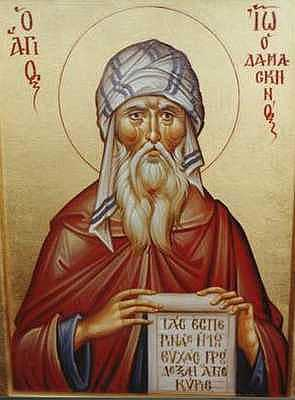

An Exact Exposition of the Orthodox Faith
by St John Damascene
Book 1

<- BOOK I CHAPTER I ->
That the Deity is incomprehensible, and that we ought not to pry into and meddle with tire things which have not been delivered to us by the holy Prophets, and Apostles, and Evangelists.
No one hath seen God at any time; the Only-begotten Son, which is in the bosom of the Father, He hath declared Him(1). The Deity, therefore, is ineffable and incomprehensible. For no one knoweth the Father, save the Son, nor the Son, save the Father(2). And the Holy Spirit, too, so knows the things of God as the spirit of the man knows the things that are in him(3). Moreover, after the first and blessed nature no one, not of men only, but even of supramundane powers, and the Cherubim, I say, and Seraphim themselves, has ever known God, save he to whom He revealed Himself.
God, however, did not leave us in absolute ignorance. For the knowledge of God's existence has been implanted by Him in all by nature. This creation, too, and its maintenance, and its government, proclaim the majesty of the Divine nature(4). Moreover, by the Law and the Prophets(5) in former times and afterwards by His Only-begotten Son, our Lord and God and Saviour Jesus Christ, He disclosed to us the knowledge of Himself as that was possible for us. All things, therefore, that have been delivered to us by Law and Prophets and Apostles and Evangelists we receive, and know, and honour(6), seeking for nothing beyond these. For God, being good, is the cause of all good, subject neither to envy nor to any passion(7). For envy is far removed from the Divine nature, which is both passionless and only good. As knowing all things, therefore, and providing for what is profitable for each, He revealed that which it was to our profit to know; but what we were unable(8) to bear He kept secret. With these things let us be satisfied, and let us abide by them, not removing everlasting boundaries, nor overpassing the divine tradition(9).
<-
BOOK I CHAPTER II
->
Concerning things utterable and things unutterable, and things knowable and thinks unknowable.
It is necessary, therefore, that one who wishes to speak or to hear of God should understand clearly that alike in the doctrine of Deity and in that of the Incarnation(1), neither are all things unutterable nor all utterable; neither all unknowable nor all knowable(2). But the knowable belongs to one order, and the utterable to another; just as it is one thing to speak and another thing to know. Many of the things relating to God, therefore, that are dimly understood cannot be put into fitting terms, but on things above us we cannot do else than express ourselves according to our limited capacity; as, for instance, when we speak of God we use the terms sleep, and wrath, and regardlessness, hands, too, and feet, land such like expressions.
We, therefore, both know and confess that God is without beginning, without end, eternal and everlasting, uncreate, unchangeable, invariable, simple, uncompound, incorporeal, invisible, impalpable, uncircumscribed, infinite, incognisable, indefinable, incomprehensible, good, just, maker of all things created, almighty, all-ruling, all-surveying, of all overseer, sovereign, judge; and that God is One, that is to say, one essences; and that He is known(4), and has His being in three subsistences, in Father, I say, and Son and Holy Spirit; and that the Father and the Son and the Holy Spirit are one in all respects, except in that of not being begotten, that of being begotten, and that of procession; and that the Only-begotten Son and Word of God and God, in His bowels of mercy, for our salvation, by the good pleasure of God and the co-operation of the Holy Spirit, being conceived without seed, was born uncorruptedly of the Holy Virgin and Mother of God, Mary, by the Holy Spirit, and became of her perfect Man; and that the Same is at once perfect God and perfect Man, of two natures, Godhead and Manhood, and in two natures possessing intelligence, will and energy, and freedom, and, in a word, perfect according to the measure and proportion proper to each, at once to the divinity, I say, and to the humanity, yet to one composite persons(5); and that He suffered hunger and thirst and weariness, and was crucified, and for three days submitted to the experience of death and burial, and ascended to heaven, from which also He came to us, and shall come again. And the Holy Scripture is witness to this and the whole choir of the Saints.
But neither do we know, nor can we tell, what the essence(6) of God is, or how it is in all, or how the Only-begotten Son and God, having emptied Himself, became Man of virgin blood, made by another law contrary to nature, or how He walked with dry feet upon the waters(7). It is not within our capacity, therefore, to say anything about God or even to think of Him, beyond the things which have been divinely revealed to us, whether by word or by manifestation, by the divine oracles at once of the Old Testament and of the New(8).
<-
BOOK I CHAPTER III
->
Proof that there is a God.
That there is a God, then, is no matter of doubt to those who receive the Holy Scriptures, the Old Testament, I mean, and the New; nor indeed to most of the Greeks. For, as we said(9), the knowledge of the existence of God is implanted in us by nature. But since the wickedness of the Evil One has prevailed so mightily against man's nature as even to drive some into denying the existence of God, that most foolish and woe-fulest pit of destruction (whose folly David, revealer of the Divine meaning, exposed when he said(9), The fool said in his heart, There is no God), so the disciples of the Lord and His Apostles, made wise by the Holy Spirit and working wonders in His power and grace, took them captive in the net of miracles and drew them up out of the depths of ignorance(1) to the light of the knowledge of God. In like manner also their successors in grace and worth, both pastors and teachers, having received the enlightening grace of the Spirit, were wont, alike by the power of miracles and the word of grace, to enlighten those walking in darkness and to bring back the wanderers into the way. But as for us who(2) are not recipients either of the gift of miracles or the gift of teaching (for indeed we have rendered ourselves unworthy of these by our passion for pleasure), come, let us in connection with this theme discuss a few of those things which have been delivered to us on this subject by the expounders of grace, calling on the Father, the Son, and the Holy Spirit.
All things, that exist, are either created or uncreated. If, then, things are created, it follows that they are also wholly mutable. For things, whose existence originated in change, must also be subject to change, whether it be that they perish or that they become other than they are by act of wills. But if things are uncreated they must in all consistency be also wholly immutable. For things which are opposed in the nature of their existence must also be opposed in the mode of their existence, that is to say, must have opposite properties: who, then, will refuse to grant that all existing things, not only such as come within the province of the senses, but even the very angels, are subject to change and transformation and movement of various kinds? For the things appertaining to the rational world, I mean angels and spirits and demons, are subject to changes of will, whether it is a progression or a retrogression in goodness, whether a struggle or a surrender; while the others suffer changes of generation and destruction, of increase and decrease, of quality and of movement in space. Things then that are mutable are also wholly created. But things that are created must be the work of some maker, and the maker cannot have been created. For if he had been created, he also must surely have been created by some one, and so on till we arrive at something uncreated. The Creator, then, being uncreated, is also wholly immutable. And what could this be other than Deity?
And even the very continuity of the creation, and its preservation and government, teach us that there does exist a Deity, who supports and maintains and preserves and ever provides for this universe. For how(4) could opposite natures, such as fire and water, air and earth, have combined with each other so as to form one complete world, and continue to abide in indissoluble union, were there not some omnipotent power which bound them together and always is preserving them from dissolution?
What is it that gave order to things of heaven and things of earth, and all those things that move in the air and in the water, or rather to what was in existence before these, viz., to heaven and earth and air and the elements of fire and water? What(5) was it that mingled and distributed these? What was it that set these in motion and keeps them in their unceasing and unhindered course(6)? Was it not the Artificer of these things, and He Who hath implanted in everything the law whereby the universe is carried on and directed? Who then is the Artificer of these things? Is it not He Who created them and brought them into existence. For we shall not attribute such a power to the spontaneous(7). For, supposing their coming into existence was due to the spontaneous; what of the power that put all in orders(8) ? And let us grant this, if you please. What of that which has preserved and kept them in harmony with the original laws of their existence(9) ? Clearly it is something quite distinct from the spontaneous(1).And what could this be other than Deity(2) ?
<-
BOOK I CHAPTER IV
->
Concerning the nature of Deity: that it is incomprehensible.
It is plain, then, that there is a God. But what He is in His essence anti nature is absolutely incomprehensible and unknowable. For it is evident that He is incorporeal(3). For how could that possess body which is infinite, and boundless, and formless, and intangible and invisible, in short, simple and not compound? How could that be immutable(4) which is circumscribed and subject to passion? And how could that be passionless which is composed of elements and is resolved again into them? For combination(5) is the beginning of conflict, and conflict of separation, and separation of dissolution, and dissolution is altogether foreign to God(6).
Again, how will it also be maintained(7) that God permeates and fills the universe? as the Scriptures say, Do not I fill heaven and earth, saith the Lords(8)? For it is an impossibility(9) that one body should permeate other bodies without dividing and being divided, and without being enveloped and contrasted, in the same way as all fluids mix and commingle.
But if some say that the body is immaterial, in thee same way as the fifth body(1) of which the Greek philosophers speak (which body is an impossibility), it will be wholly subject to motion like the heaven. For that is what they mean by the fifth body. Who then is it that moves it? For everything that is moved is moved by another thing. And who again is it that moves that? and so on to infinity till we at length arrive at something motionless. For the first mover is motionless, and that is the Deity. And must not that which is moved be circumscribed in space? The Deity, then, alone is motionless, moving the universe by immobility(2). So then it must be assumed that the Deity is incorporeal.
But even this gives no true idea of His essence, to say that He is unbegotten, and without beginning, changeless and imperishable, and possessed of such other qualities as we are wont to ascribe to God and His environments. For these do not indicate what He is, but what He is not(4). But when we would explain what the essence of anything is, we must not speak only negatively. In the case of God, however, it is impossible to explain what He is in His essence, and it befits us the rather to hold discourse about His absolute separation from all things(5). For He does not belong to the class of existing things: not that He has no existence(6), but that He is above all existing things, nay even above existence itself. For if all forms of knowledge have to do with what exists, assuredly that which is above knowledge must certainly be also above essence(7): and, conversely, that which is above essence(7) will also be above knowledge.
God then is infinite and incomprehensible and all that is comprehensible about Him is His infinity and incomprehensibility. But all that we can affirm concerning God does not shew forth God's nature, but only the qualities of His nature(8). For when you speak of Him as good, and just, and wise, and so forth, you do not tell God's nature but only the qualities of His nature(9). Further there are some affirmations which we make concerning God which have the force of absolute negation: for example, when we use the term darkness, in reference to God, we do not mean darkness itself, but that He is not light but above light: and when we speak of Him as light, we mean that He is not darkness.
<-
BOOK I CHAPTER V
->
Proof that God is one and not many.
We have, then, adequately demonstrated that there is a God, and that His essence is incomprehensible. But that God is one(1) and not many is no matter of doubt to those who believe in the Holy Scriptures. For the Lord says in the beginning of the Law: I am the Lord thy God, which have brought thee out of the land of Egypt. Thou shall have no other Gods before Me(2). And again He says, Hear, O Israel, the Lord our God is one Lord(3). And in Isaiah the prophet we read For I am the first God and I am the last and beside Me there is no God. Before Me there was not any God, nor after Me will there be any God, and beside Me there is no God(4). And the Lord, too, in the holy gospels speaketh these words to His Father, And this is life eternal, that they may know Thee the only true God(5). But with those that do not believe in the Holy Scriptures we will reason thus.
The Deity is perfect(6), and without blemish in goodness, and wisdom, and power, without beginning, without end, everlasting, uncircumscribed(7), and in short, perfect in all things. Should we say, then, that there are many Gods, we must recognise difference among the many. For if there is no difference among them, they are one rather than many. But if there is difference among them, what becomes of the perfectness? For that which comes short of perfection, whether it be in goodness, or power, or wisdom, or time, or place, could not be God. But it is this very identity in all respects that shews that the Deity is one and not many(8).
Again, if there are many Gods, how can one maintain that God is uncircumscribed? For where the one would be, the other could not be(9).
Further, how could the world be governed by many and saved from dissolution and destruction, while strife is seen to rage between the rulers? For difference introduces strife(1). And if any one should say that each rules over a part, what of that which established this order and gave to each his particular realm? For this would the rather be God. Therefore, God is one, perfect, uncircumscribed, maker of the universe, and its preserver and governor, exceeding and preceding all perfection.
Moreover, it is a natural necessity that duality should originate in unity(2).
<-
BOOK I CHAPTER VI
->
Concerning the Word and the San of God: a reasoned proof.
So then this one and only God is not Wordless(3). And possessing the Word, He will have it not as without a subsistence, nor as having had a beginning, nor as destined to cease to be. For there never was a time when God was not Word: but He ever possesses His own Word, begotten of Himself, not, as our word is, without a subsistence and dissolving into air, but having a subsistence in Him and life and perfection, not proceeding out of Himself but ever existing within Himself(4). For where could it be, if it were to go outside Him? For inasmuch as our nature is perishable and easily dissolved, our word is also without subsistence. But since God is everlasting and perfect, He will have His Word subsistent in Him, and everlasting trod living, and possessed of all the attributes of the Begetter. For just as our word, proceeding as it floes out of the mind, is neither wholly identical with the mind nor utterly diverse from it (for so far as it proceeds out of the mind it is different from it, while so far as it reveals the mind, it is no longer absolutely diverse from the mind, but being one in nature with the mind, it is yet to the subject diverse from it), so in the same manner also the Word of Gods in its independent subsistence is differentiated(6) froth Him from Whom it derives its subsistence(7): but inasmuch as it displays in itself the same attributes as are seen in God, it is of the same nature as God. For just as absolute perfection is contemplated in the Father, so also is it contemplated in the Word that is begotten of Him.
<-
BOOK I CHAPTER VII
->
Concerning the Holy Spirit, a reasoned proof.
Moreover the Word must also possess Spirit(8). For in fact even our word is not destitute of spirit; but in our case the spirit is something different from our essence(9). For there is an attraction and movement of the air which is drawn in and poured forth that the body may be sustained. And it is this which in the moment of utterance becomes the articulate word, revealing in itself the force of the word(1).(2) But in the case of the divine nature, which is simple and uncompound, we must confess in all piety that there exists a Spirit of God, for the Word is not more imperfect than our own word. Now we cannot, in piety, consider the Spirit to be something foreign that gains admission into God from without, as is the case with compound natures like us. Nay, just as, when we heard(3) of the Word of God, we considered it to be not without subsistence, nor the product of learning, nor the mere utterance of voice, nor as passing into the air and perishing, but as being essentially subsisting, endowed with free volition, and energy, and omnipotence: so also, when we have learnt about the Spirit of God, we contemplate it as the companion of the Word and the revealer of His energy, and not as mere breath without subsistence. For to conceive of the Spirit that dwells in God as after the likeness of our own spirit, would be to drag down the greatness of the divine nature to the lowest depths of degradation. But we must contemplate it as an essential power, existing in its own proper and peculiar subsistence, proceeding from the Father anti resting in the Word(4), and shewing forth the Word, neither capable of disjunction from God in Whom it exists, and the Word Whose companion it is, nor poured forth to vanish into nothingness(5), but being in subsistence in the likeness of the Word, endowed with life, free volition, independent movement, energy, ever willing that which is good, and having power to keep pace with the will in all its decrees(6), having no beginning and no end. For never was the Father at any time lacking in the Word, nor the Word in the Spirit.
Thus because of the unity in nature, the error of the Greeks in holding that God is many, is utterly destroyed: and again by our acceptance of the Word and the Spirit, the dogma of the Jews is overthrown: and there remains of each party(7) only what is profitable(8). On the one hand of the Jewish idea we have the unity of God's nature, anti on the other, of the Greek, we have the distinction in subsistences and that only(9).
But should the Jew refuse to accept the Word and the Spirit, let the divine Scripture confute him and curb his tongue. For concerning the Word, the divine David says, For ever, O Lord, Thy Word is settled in heaven(1). And again , He sent His Word and healed them(2). But the word that is uttered is not sent, nor is it for ever settled(3). And concerning the Spirit, the same David says, Thou sendest forth Thy Spirit, they are created(4). And again, By the word of the Lord were the heavens made: and all the host of them by the breath of His mouth(5). Job, too, says, The Spirit of God hath made me, and the breath of the Almighty hath given me life(6). Now the Spirit which is sent and makes and stablishes and conserves, is not mere breath that dissolves, any more than the mouth of God is a bodily member. For the conception of both must be such as harmonizes with the Divine nature(7).
<-
BOOK I CHAPTER VIII
->
Concerning the Holy Trinity.
We believe, then, in One God, one beginning(8), having no beginning, uncreate, unbegotten, imperishable and immortal, everlasting, infinite, uncircumscribed, boundless, of infinite power, simple, uncompound, incorporeal, without flux, passionless, unchangeable, unalterable, unseen, the fountain of goodness and justice, the light of the mind, inaccessible; a power known by no measure, measurable only by His own will alone (for all things that He wills He can(9)), creator of all created things, seen or unseen, of all the maintainer and preserver, for all the provider, master and lord and king over all, with an endless and immortal kingdom: having no contrary, filling all, by nothing encompassed, but rather Himself the encompasser and maintainer and original possessor of the universe, occupying(1) all essences intact(2) and extending beyond all things, and being separate from all essence as being super-essential(3) and above all things and absolute God, absolute goodness, and absolute fulness(4): determining all sovereignties and ranks, being placed above all sovereignty and rank, above essence and life and word and thought: being Himself very light and goodness and life and essence, inasmuch as He does not derive His being from another, that is to say, of those things that exist: but being Himself the fountain of being to all that is, of life to the living, of reason to those that have reason; to all the cause of all good: perceiving all things even before they have become: one essence, one divinity, one power, one will, one energy, one beginning, one authority, one dominion, one sovereignty, made known in three perfect subsistences anti adored with one adoration, believed in and ministered to by all rational creation(5), united without confusion and divided without separation (which indeed transcends thought). (We believe) in Father and Son and Holy Spirit whereinto also we have been baptized(6). For so our Lord commanded the Apostles to baptize, saying, Baptizing them in the name of the Father, Son, and Holy Spirit(7).
(We believe) in one Father, the beginning(8), and cause of all: begotten of no one: without cause or generation, alone subsisting: creator of all: but Father of one only by nature, His Only-begotten Son and our Lord and God and Saviour Jesus Christ, and Producer(9) of the most Holy Spirit. And in one Son of God, the Only-begotten, our Lord, Jesus Christ: begotten of the Father, before all the ages: Light of Light, true God of true God: begotten, not made, consubstantial with the Father, through Whom all things are made: and when we say He was before all the ages we shew that His birth is without time or beginning: for the Son of God was not brought into being out of nothing(1), He that is the effulgence of the glory, the impress of the Father's subsistence(2), the living wisdom and power(3), the Word possessing interior subsistence(4), the essential and perfect and living image s of the unseen God. But always He was with the Father and in Him(6), everlastingly and without beginning begotten of Him. For there never was a time when the Father was and the Son was not, but always the Father and always the Son, Who was begotten of Him, existed together. For He could not have received the name Father apart from the Son: for if He were without the Son(7), He could not be the Father: and if He thereafter had the Son, thereafter He became the Father, not having been the Father prior to this, and He was changed from that which was not the Father and became the Father. This is the worst form of blasphemy(8). For we may not speak of God as destitute of natural generative power: and generative power means, the power of producing from one's self, that is to say, from one's own proper essence, that which is like in nature to one's self(9).
In treating, then, of the generation of the Son, it is an act of impiety(1) to say that time comes into play and that the existence of the Son is of later origin than the Father. For we hold that it is from Him, that is, from the Father's nature, that the Son is generated. And unless we grant that the Son co-existed from the beginning with the Father, by Whom He was begotten, we introduce change into the Father's subsistence, because, not being the Father, He subsequently became the Father(2). For the creation, even though it originated later, is nevertheless not derived from the essence of God, but is brought into existence out of nothing by His will and power, and change does not touch God's nature. For generation means that the begetter produces out of his essence offspring similar in essence. But creation and making mean that the creator and maker produces from that which is external, and not out of his own essence, a creation of an absolutely dissimilar nature(3).
Wherefore in God, Who alone is passionless and unalterable, and immutable, and ever so continueth, both begetting and creating are passionless(4). For being by nature passionless and not liable to flux, since He is simple and uncompound, He is not subject to passion or flux either in begetting or in creating, nor has He need of any co-operation. But generation in Him is without beginning and everlasting, being the work of nature and producing out of His own essence, that the Begetter may not undergo change, and that He may not be God first and God last, nor receive any accession: while creation in the case of God(5), being the work of will, is not co-eternal with God. For it is not natural that that which is brought into existence out of nothing should be co-eternal with what is without beginning and everlasting. There is this difference in fact between man's making and God's. Man can bring nothing into existence out of nothing(6), but all that he makes requires pre-existing matter for its basis(7), and he does not create it by will only, but thinks out first what it is to be and pictures it in his mind, and only then fashions it with his hands, undergoing labour and troubles(8), and often missing the mark and failing to produce to his satisfaction that after which he strives. But God, through the exercise of will alone, has brought all things into existence out of nothing. Now there is the same difference between God and man in begetting and generating. For in God, Who is without time and beginning, passionless, not liable to flux, incorporeal, alone and without end(1), generation is without time and beginning, passionless and not liable to flux, nor dependent on the union of two(2): nor has His own incomprehensible generation beginning or end. And it is without beginning because He is immutable: without flux because He is passionless and incorporeal: independent of the union of two again because He is incorporeal but also because He is the one and only God, and stands in need of no co-operation: and without end or cessation because He is without beginning, or time, or end, and ever continues the same. For that which has no beginning has no end: but that which through grace is endless is assuredly not without beginning, as, witness, the angels(3).
Accordingly the everlasting God generates His own Word which is perfect, without beginning and without end, that God, Whose nature and existence are above time, may not engender in time. But with man clearly it is otherwise, for generation is with him a matter of sex, and destruction and flux and increase and body clothe him round about(4), and he possesses a nature which is male or female. For the male requires the assistance of the female. But may He Who surpasses all, and transcends all thought and comprehension, be gracious to us.
The holy catholic and apostolic Church,
then, teaches the existence at once of a Father: and of His Only-begotten Son, born of Him without time and flux and passion, in a manner incomprehensible and perceived by the God of the universe alone: just as we recognise the existence at once of fire and the light which proceeds from it: for there is not first fire and thereafter light, but they exist together. And just as light is ever the product of fire, and ever is in it and at no time is separate from it, so in like manner also the Son is begotten of the Father and is never in any ways separate from Him, but ever is in Him(6). But whereas the light which is produced from fire without separation, and abideth ever in it, has no proper subsistence of its own distinct from that of fire (for it is a natural quality of fire), the Only-begotten Son of God, begotten of the Father without separation and difference and ever abiding in Him, has a proper subsistence of its own distinct froth that of the Father.
The terms, 'Word' and 'effulgence,' then, are used because He is begotten of the Father without the union of two, or passion, or time, or flux, or separation(7): and the terms 'Son' and 'impress of the Father's subsistence,' because He is perfect and has subsistence s and is in all respects similar to the Father, save that the Father is not begotten(9): and the term 'Only-begotten'(1) because He alone was begotten alone of the Father alone. For no other generation is like to the generation of the Son of God, since no other is Son of God. For though the Holy Spirit proceedeth from the Father, yet this is not generative in character but processional. This is a different mode of existence, alike incomprehensible and unknown, just as is the generation of the Son. Wherefore all the qualities the Father has are the Son's, save that the Father is unbegotten(2), and this exception involves no difference in essence nor dignity(3), but only a different mode of coming into existence(4). We have an analogy in Adam, who was not begotten (for God Himself moulded him), and Seth, who was begotten (for he is Adam's son), and Eve, who proceeded out of Adam's rib (for she was not begotten). These do not differ from each other in nature, for they are human beings: but they differ in the mode of coming into existence(5).
For one must recognise that the word
written with double '
So then in the first sense of the word the three absolutely divine subsistences of the Holy Godhead agree(6): for they exist as one in essence and uncreate(7). But with the second signification it is quite otherwise. For the Father alone is ingenerate(8), no other subsistence having given Him being. And the Son alone is generate, for He was begotten of the Father's essence without beginning and without time. And only the Holy Spirit proceedeth from the Father's essence, not having been generated but simply proceeding(9). For this is the doctrine of Holy Scripture. But the nature of the generation and the procession is quite beyond comprehension.
And this also it behoves(1) us to know, that the names Fatherhood, Sonship and Procession, were not applied to the Holy Godhead by us: on the contrary, they were communicated to us by the Godhead, as the divine apostle says, Wherefore I bow the knee to the Father, from Whom is every family in heaven and on earth(2). But if we say(3) that the Father is the origin of the Son and greater than the
Son, we do not suggest any precedence in time or superiority in nature of the Father over the Son(4) (for through His agency He made the ages(5)), or superiority in any other respect save causation. And we mean by this, that the Son is begotten of the Father and not the Father of the Son, and that the Father naturally is the cause of the Son: just as we say in the same way not that fire proceedeth from light, but rather light from fire. So then, whenever we hear it said that the Father is the origin of the Son and greater than the Son, let us understand it to mean in respect of causation. And just as we do not say that fire is of one essence and light of another, so we cannot say that the Father is of one essence and the Son of another: but both are of one and the same essence(6). And just as we say that fire has brightness(7) through the light proceeding from it, and do not consider the light of the fire as an instrument ministering to the fire, but rather as its natural force: so we say that the Father creates all that He creates through His Only-begotten Son, not as though the Son were a mere instrument serving(8) the Father's ends, but as His natural and subsistential force(9). And just as we say both that the fire shines and again that the light of the fire shines, So all things whatsoever the Father doeth, these also doeth the Son likewise(9a). But whereas light possesses no proper subsistence of its own, distinct from that of the fire, the Son is a perfect subsistence(1), inseparable from the Father's subsistence, as we have shewn above. For it is quite impossible to find in creation an image that will illustrate in itself exactly in all details the nature of the Holy Trinity. For how could that which is create and compound, subject to flux and change, circumscribed, formed and corruptible, clearly shew forth the super-essential divine essence, unaffected as it is in any of these ways? Now it is evident that all creation is liable to most of these affections, and all from its very nature is subject to corruption.
Likewise we believe also in one Holy Spirit, the Lord and Giver of Life: Who proceedeth from the Father and resteth in the Son: the object of equal adoration and glorification with the Father and Son, since He is co-essential and co-eternal(2): the Spirit of God, direct, authoritative(3), the fountain of wisdom, and life, and holiness: God existing and addressed along with Father and Son: uncreate, full, creative, all-ruling, all-effecting, all-powerful, of infinite power, Lord of all creation and not under any lord(4): deifying, not deified(5): filling, not filled: shared in, not sharing in: sanctifying, not sanctified: the intercessor, receiving the supplications of all: in all things like to the Father and Son: proceeding from the Father and communicated through the Son, and participated in by all creation, through Himself creating, and investing with essence and sanctifying, and maintaining the universe: having subsistence, existing in its own proper and peculiar subsistence, inseparable and indivisible from Father and Son, and possessing all the qualities that the Father and Son possess, save that of not being begotten or born. For the Father is without canst and unborn: for He is derived from nothing, but derives from Himself His being, nor does He derive a single quality from another(6). Rather He is Himself the beginning and cause of the existence of all things in a definite and natural manner. But the Son is derived from the Father after the manner of generation, and the Holy Spirit likewise is derived from the Father, yet not after the manner of generation, but after that of procession. And we have learned that there is a difference(7) between generation and procession, but the nature of that difference we in no wise understand. Further, the generation of the Son from the Father and the procession of the Holy Spirit are simultaneous.
All then that the Son and the Spirit have is from the Father, even their very being(8): and unless the Father is, neither the Son nor the Spirit is. And unless the Father possesses a certain attribute, neither the Son nor the Spirit possesses it: and through the Father(9), that is, because of the Father's existence(1), the Son and the Spirit exist(2), and through the Father, that is, because of the Father having the qualities, the Son and the Spirit have all their qualities, those of being unbegotten, and of birth and of procession being excepted(3). For in these hypo-
static or personal properties alone do the three holy subsistences(3) differ from each other, being indivisibly divided not by essence but by the distinguishing mark of their proper and peculiar subsistence.
Further we say that each of(4) the three has a perfect subsistence, that we may understand not one compound perfect nature made up of three imperfect elements, but one simple essence, surpassing and preceding perfection, existing in three perfect subsistences(5). For all that is composed of imperfect elements must necessarily be compound. But from perfect subsistences no compound can arise. Wherefore we do not speak of the form as from subsistences, but as in subsistences(6). But we speak of those things as imperfect which do not preserve the form of that which is completed out of them. For stone and wood and iron are each perfect in its own nature, but with reference to the building that is completed out of them each is imperfect: for none of them is in itself a house.
The subsistences then we say are perfect, that we may not conceive of the divine nature as compound. For compoundness is the beginning of separation. And again we speak of the three subsistences as being in each other(7), that we may not introduce a crowd and multitude of Gods(8). Owing to the three subsistences, there is no compoundness or confusion: while, owing to their having the same essence and dwelling in one another, and being the same in will, and energy, and power, and authority, and movement, so to speak, we recognise the indivisibility and the unity of God. For verily there is one God, and His word and Spirit.
Marg. MS. Concerning the distinction of the three subsistences: and concerning the thing itself and our reason and thought in relation to it.
One ought, moreover, to recognise that it is one thing to look at a matter as it is, and another thing to look at it in the light of reason and thought. In the case of all created things, the distinction of the subsistences is observed in actual fact. For in actual fact Peter is seen to be separate from Paul. But the community and connection and unity are apprehended by reason and thought. For it is by the mind that we perceive that Peter and Paul are of the same nature and have one common nature(9). For both are living creatures, rational and mortal: and both are flesh, endowed with the spirit of reason and understanding(1). It is, then, by reason that this community of nature is observed. For here indeed the subsistences do not exist one within the other. But each privately and individually, that is to say, in itself, stands quite separate, having very many points that divide it from the other. For they are both separated in space and differ in time, and are divided in thought, and power, and shape, or form, and habit, and temperament and dignity, and pursuits, and all differentiating properties, but above all, in the fact that they do not dwell in one another but are separated. Hence it comes that we can speak of two, three, or many men.
And this may be perceived throughout the whole of creation, but in the case of the holy and superessential and incomprehensible Trinity, far removed from everything, it is quite the reverse. For there the community and unity are observed in fact, through the co-eternity of the subsistences, and through their having the same essence and energy and will and concord of mind(2), and then being identical in authority and power and goodness--I do not say similar but identical--and then movement by one impulse(3). For there is one essence, one goodness, one power, one will, one energy, one authority, one and the same, I repeat, not three resembling each other. But the three subsistences have one and the same movement. For each one of them is related as closely to the other as to itself: that is to say that the Father, the Son, and the Holy Spirit are one in all respects, save those of not being begotten, of birth and of procession. But it is by thought that the difference is perceived(4). For we recognise one God: but only in the attributes of Fatherhood, Sonship, and Procession, both in respect of cause and effect and perfection of subsistence, that is, manner of existence, do we perceive difference(5). For with reference to the uncircumscribed Deity we cannot speak of separation in space, as we can in our own case. For the subsistences dwell in one another, in no wise confused but cleaving together, according to the word of the Lord,
I am in the father, and the father in Me(6): nor can one admit difference in will or judgment or energy or power or anything else whatsoever which may produce actual and absolute separation in our case. Wherefore we do not speak of three Gods, the Father, the Son, and the Holy Spirit, but rather of one God, the holy Trinity, the Son and Spirit being referred to one cause(7), and not compounded or coalesced according to the synaeresis of Sabellius. For, as we said, they are made one not so as to commingle, but so as to cleave to each other, and they have their being in each other(8) without any coalescence or commingling. Nor do the Son and the Spirit stand apart, nor are they sundered in essence according to the diaeresis of Arias(9). For the Deity is undivided amongst things divided, to put it concisely: and it is just like three suns cleaving to each other without separation and giving out light mingled and conjoined into one. When, then, we turn our eyes to the Divinity, and the first cause and the sovereignty and the oneness anti sameness, so to speak, of the movement and will of the Divinity, and the identity in essence and power and energy and lordship, what is seen by us is unity(1). But when we look to those things in which the Divinity is, or, to put it more accurately, which are the Divinity, and those things which are in it through the first cause without time or distinction in glory or separation, that is to say, the subsistences of the Son and the Spirit, it seems to us a Trinity that we adore(2). The Father is one Father, and without beginning, that is, without cause: for He is not derived from anything. The Son is one Son, but not without beginning, that is, not without cause: for He is derived from the Father. But if you eliminate the idea of a beginning from time, He is also without beginning: for the creator of times cannot be subject to time. The Holy Spirit is one Spirit, going forth from the Father, not in the manner of Sonship but of procession; so that neither has the Father lost His property of being unbegotten because He hath begotten, nor has the Son lost His property of being begotten because He was begotten of that which was unbegotten (for how could that be so?), nor does the Spirit change either into the Father or into the Son because He hath proceeded and is God. For a property is quite constant. For how could a property persist if it were variable, moveable, and could change into something else? For if the Father is the Son, He is not strictly the Father: for there is strictly one Father. And if the Son is the Father, He is not strictly the Son: for there is strictly one Son and one Holy Spirit.
Further, it should be understood that we do not speak of the Father as derived from any one, but we speak of Him as the Father of the Son. And we do not speak of the Son as Cause(3) or Father, but we speak of Him both as from the Father, and as the Son of the Father. And we speak likewise of the Holy Spirit as from the Father, and call Him the Spirit of the Father. And we do not speak of the Spirit as from the Son(4): s but yet we call Him the Spirit of the Son. For if any one hath not the Spirit of Christ, he is none of His(6), saith the divine apostle. And we confess that He is manifested and imparted to us through the Son. For He breathed upon His Disciples, says he, and said, Receive ye the Holy Spirit(7). It is just the same as in the case of the sun from which come both the ray and the radiance (for the sun itself is the source of both the ray and the radiance), and it is through the ray that the radiance is imparted to us, and it is the radiance itself by which we are lightened and in which we participate. Further we do not speak of the Son of the Spirit, or of the Son as derived from the Spirit(8).
<-
BOOK I CHAPTER IX
->
Concerning what is affirmed about God.
The Deity is simple and uncompound. But that which is composed of many and different elements is compound. If, then, we should speak of the qualities of being uncreate and without beginning and incorporeal and immortal and everlasting and good and creative and so forth as essential differences in the case of God, that which is composed of so many qualities will not be simple but must be compound. But this is impious in the extreme. Each then of the affirmations about God should be thought of as signifying not what He is in essence, but either something that it is impossible to make plain, or some relation to some of those things which are contrasts or some of those things that follow the nature, or an energy(9).
It appears then(9a) that the most proper of all the names given to God is "He that is," as He Himself said in answer to Moses on the mountain, Say to the sons of Israel, He that is hath sent Me(1). For He keeps all being in His own embrace(2), like a sea of essence infinite and unseen. Or as the holy Dionysius says, "He that is good(3)." For one cannot say of God that He has being in the first place and goodness in the second.
The second name of God is
The first name then conveys the notion of His existence and of the nature of His existence: while the second contains the idea of energy. Further, the terms 'without beginning,' ' incorruptible,' 'unbegotten,' as also 'uncreate,' 'incorporeal,' 'unseen,' and so forth, explain what He is not: that is to say, they tell us that His being had no beginning, that He is not corruptible, nor created, nor corporeaI, nor visible(9). Again, goodness and justice and piety and such like names belong to the nature(1), but do not explain His actual essence. Finally, Lord and King and names of that class indicate a relationship with their contrasts: for the name Lord has reference to those over whom the lord rules, and the name King to those under kingly authority, and the name Creator to the creatures, and the name Shepherd to the sheep he tends.
<-
BOOK I CHAPTER X
->
Concerning divine union and separation.
Therefore all these names must be understood as common to deity as a whole, and as containing the notions of sameness and simplicity and indivisibility and union: while the names Father, Son and Spirit, and cause, less and caused, and unbegotten and begotten, and procession contain the idea of separation: for these terms do not explain His essence, but the mutual relationship(2) and manner of existence(3).
When, then, we have perceived these things and are conducted from these to the divine essence, we do not apprehend the essence itself but only the attributes of the essence: just as we have not apprehended the essence of the soul even when we have learnt that it is incorporeal and without magnitude and form: nor again, the essence of the body when we know that it is white or black, but only the attributes of the essence. Further, the true doctrine(4) teacheth that the Deity is simple and has one simple energy, good and energising in all things, just as the sun's ray, which warms all things and energises in each in harmony with its natural aptitude and receptive power, having obtained this form of energy from God, its Maker.
But quite distinct is all that pertains to the divine and benignant incarnation of the divine Word. For in that neither the Father nor the Spirit have any part at all, unless so far as regards approval and the working of inexplicable miracles which the God-Word,
having become man(5) like us, worked, as unchangeable God and son of God(6).
<-
BOOK I CHAPTER XI
->
Concerning what is affirmed about God as though He had body.
Since we find many terms used symbolically in the Scriptures concerning God which are more applicable to that which has body, we should recognise that it is quite impossible for us men clothed about with this dense covering of flesh to understand or speak of the divine and lofty and immaterial energies of the Godhead, except by the use of images and types and symbols derived from our own life(7). So then all the statements concerning God, that imply body, are symbols, but have a higher meaning: for the Deity is simple and formless. Hence by God's eyes and eyelids and sight we are to understand His power of overseeing all things and His knowledge, that nothing can escape: for in the case of us this sense makes our knowledge more complete and more full of certainty. By God's ears and hearing is meant His readiness to be propitiated and to receive our petitions: for it is this sense that renders us also kind to suppliants, inclining our ear to them more graciously. God's mouth and speech are His means of indicating His will; for it is by the mouth and speech that we make clear the thoughts that are in the heart: God's food and drink are our concurrence to His will, for we, too, satisfy the necessities of our natural appetite through the sense of taste. And God's sense of smell is His appreciation of our thoughts of and good will towards Him, for it is through this sense that we appreciate sweet fragrance. And God's countenance is the demonstration and manifestation of Himself through His works, for our manifestation is through the countenance. And God's hands mean the effectual nature of His energy, for it is with our own hands that we accomplish our most useful and valuable work. And His right hand is His aid in prosperity, for it is the right hand that we also use when making anything of beautiful shape or of great value, or where much strength is required. His handling is His power of accurate discrimination and exaction, even in the minutest and most secret details, for those whom we have handled cannot conceal from us aught within themselves. His feet and walk are His advent and presence, either for the purpose of bringing succour to the needy, or vengeance against enemies, or to perform any other action, for it is by using our feet that we come to arrive at any place. His oath is the unchangeableness of His counsel, for it is by oath that we confirm our compacts with one another. His anger and fury are His hatred of and aversion to all wickedness, for we, too, hate that which is contrary to our mind and become enraged thereat(8). His forgetfulness and sleep and slumbering are His delay in taking vengeance on His enemies and the postponement of the accustomed help to His own. And to put it shortly, all the statements made about God that imply body have some hidden meaning and teach us what is above us by means of something familiar to ourselves, with the exception of any statement concerning the bodily sojourn of the God-Word. For He for our safety took upon Himself the whole nature of man(9), the thinking spirit, the body, and all the properties of human nature, even the natural and blameless passions.
<-
BOOK I CHAPTER XII
->
Concerning the Same.
The following, then, are the mysteries which we have learned from the holy oracles, as the divine Dionysius the Areopagite said(1): that God is the cause and beginning of all: the essence of all that have essence: the life of the living: the reason of all rational beings: the intellect of all intelligent beings: the recalling and restoring of those who fall away from Him: the renovation and transformation of those that corrupt that which is natural: the holy foundation of those who are tossed in unholiness: the steadfastness of those who have stood firm: the way of those whose course is directed to Him and the hand stretched forth to guide them upwards. And I shall add He is also the Father of all His creatures (for God, Who brought us into being out of nothing, is in a stricter sense our Father than are our parents who have derived both being and begetting from Him(2)): the shepherd of those who follow and are tended by Him: the radiance of those who are enlightened: the initiation of the initiated: the deification of the deified: the peace of those at discord: the simplicity of those who love simplicity: the unity of those who worship unity: of all beginning the beginning, super-essential be-
cause above all beginnings: and the good revelation of what is hidden, that is, of the knowledge of Him so far as that is lawful for and attainable by each.
Further and more accurately concerning
divine names(4).
The Deity being incomprehensible is also assuredly nameless. Therefore since we know not His essence, let us not seek for a name for His essence. For names are explanations of actual things(5). But God, Who is good and brought us out of nothing into being that we might share in His goodness, and Who gave us the faculty of knowledge, not only did not impart to us His essence, but did not even grant us the knowledge of His essence. For it is impossible for nature to understand fully the supernatural(6). Moreover, if knowledge is of things that are(7), how can there be knowledge of the super-essential? Through His unspeakable goodness, then, it pleased Him to be called by names that we could understand, that we might not be altogether cut off from the knowlege of Him but should have some notion of Him, however vague. Inasmuch, then, as He is incomprehensible, He is also unnameable. But inasmuch as He is the cause of all and contains in Himself the reasons and causes of all that is, He receives names drawn from all that is, even from opposites: for example, He is called light and darkness, water and fire: in order that we may know that these are not of His essence but that He is super-essential and unnameable: but inasmuch as He is the cause of all, He receives names from all His effects.
Wherefore, of the divine names, some have a negative signification, and indicate that He is super-essential(8): such are "non-essential(9)," "timeless," "without beginning," "invisible": not that God is inferior to anything or lacking in anything (for all things are His and have become from Him and through Him and endure in Him(9)), but that He is pre-eminently separated from all that is. For He is not one of the things that are, but over all things. Some again have an affirmative signification, as indicating that He is the cause of all things. For as the cause of all that is and of all essence, He is called both Ens and Essence. And as the cause of all reason and wisdom, of the rational and the wise, He is called both reason and rational, and wisdom and wise. Similarly He is spoken of as Intellect and Intellectual, Life and Living, Power and Powerful, and so on with all the rest. Or rather those names are most appropriate to Him which are derived from what is most precious and most akin to Himself. That which is immaterial is more precious and more akin to Himself than that which is material, and the pure than the impure, and the holy than the unholy: for they have greater part in Him. So then, sun and light will be more apt names for Him than darkness, and day than night, and life than death, and fire and spirit and water, as having life, than earth, and above all, goodness than wickedness: which is just to say, being more than not being. For goodness is existence and the cause of existence, but wickedness is the negation of goodness, that is, of existence. These, then, are the affirmations and the negations, but the sweetest names are a combination of both: for example, the super-essential essence, the Godhead that is more than God, the beginning that is above beginning and such like. Further there are some affirmations about God which have in a pre-eminent degree the force of denial: for example, darkness: for this does not imply that God is darkness but that He is not light, but above light.
God then is called Mind and Reason and Spirit and Wisdom and Power, as the cause of these, and as immaterial, and maker of all, and omnipotent(9b). And these names are common to the whole Godhead, whether affirmative or negative. And they are also used of each of the subsistences of the Holy Trinity in the very same and identical way and with their full significance(1). For when I think of one of the subsistences, I recognise it to be perfect God and perfect essence: but when I combine and reckon the three together, I know one perfect God. For the Godhead is not compound but in three perfect subsistences, one perfect indivisible and uncompound God. And when I think of the relation of the three subsistences to each other, I perceive that the Father is super-essential Sun, source of goodness, fathomless sea of essence, reason, wisdom, power, light, divinity: the generating and productive source
of good hidden in it. He Himself then is mind, the depth of reason, begetter of the Word, and through the Word the Producer(2) of the revealing Spirit. And to put it shortly, the Father has no reason(3), wisdom, power, will(4), save the Son Who is the only power of the Father the immediate(5) cause of the creation of the universe: as perfect subsistence begotten of perfect subsistence in a manner known to Himself, Who is and is named the Son. And the Holy Spirit is the power of the Father revealing the hidden mysteries of His Divinity, proceeding from the Father through the Son in a manner known to Himself, but different from that of generation. Wherefore the Holy Spirit is the perfecter of the creation of the universe. All the terms, then, that are appropriate to the Father, as cause, source, begetter, are to be ascribed to the Father alone: while those that are appropriate to the caused, begotten Son, Word, immediate power, will, wisdom, are to be ascribed to the Son: and those that are appropriate to the caused, processional, manifesting, perfecting power, are to be ascribed to the Holy Spirit. The Father is the source and cause of the Son and the Holy Spirit: Father of the Son alone and producer of the Holy Spirit. The Son is Son, Word, Wisdom, Power, Image, Effulgence, Impress of the Father and derived from the Father. But the Holy Spirit is not the Son of the Father but the Spirit of the Father as proceeding from the Father. For there is no impulse without Spirit. And we speak also of the Spirit of the Son, not as through proceeding from Him, but as proceeding through Him from the Father. For the Father alone is cause.
<-
BOOK I CHAPTER XIII
->
Concerning the place of God: and that the Deity alone is uncircumscribed.
Bodily place is the limit of that which contains, by which that which is contained is contained(6): for example, the air contains but the body is contained(7). But it is not the whole of the containing air which is the place of the contained body, but the limit of the containing air, where it comes into contact with the contained body: and the reason is clearly because that which contains is not within that which it contains.
But there is also mental place where mind is active, and mental and incorporeal nature exists: where mind dwells and energises and is contained not in a bodily but in a mental fashion. For it is without form, and so cannot be contained as a body is. God, then, being immaterial(8) and uncircumscribed, has not place. For He is His own place, filling all things and being above all things, and Himself maintaining all things(9). Yet we speak of God having place and the place of God where His energy becomes manifest. For He penetrates everything without mixing with it, and imparts to all His energy in proportion to the fitness and receptive power of each: and by this I mean, a purity both natural and voluntary. For the immaterial is purer than the material, and that which is virtuous than that which is linked with vice. Wherefore by the place of God is meant that which has a greater share in His energy and grace. For this reason the Heaven is His throne. For in it are the angels who do His will and are always glorifying Him(1). For this is His rest and the earth is His footstool(2). For in it He dwelt in the flesh among men(3). And His sacred flesh has been named the foot of God. The Church, too, is spoken of as the place of God: for we have set this apart for the glorifying of God as a sort of consecrated place wherein we also hold converse with Him. Likewise also the places in which His energy becomes manifest to us, whether through the flesh or apart from flesh, are spoken of as the places of God.
But it must be understood that the Deity is indivisible, being everywhere wholly in His entirety and not divided up part by part like that which has body, but wholly in everything and wholly above everything. Marg. MS. Concerning the place of angel and spirit, and concerning the uncircumscribed.
The angel, although not contained in place with figured form as is body, yet is spoken of as being in place because he has a mental presence and energises in accordance with his nature, and is not elsewhere but has his mental limitations there where he energises. For it is impossible to energise at the same time in different places. For to God alone belongs the power of energising everywhere
at the same time. The angel energises in different places by the quickness of his nature and the promptness and speed by which he can change his place: but the Deity, Who is everywhere and above all, energises at the same time in diverse ways with one simple energy.
Further the soul is bound up with the body. whole with whole and not part with part: and it is not contained by the body but contains it as fire does iron, and being in it energises with its own proper energies.
That which is comprehended in place or time or apprehension is circumscribed: while that which is contained by none of these is uncircumscribed. Wherefore the Deity alone is uncircumscribed, being without beginning and without end, and containing all things, and in no wise apprehended(4). For He alone is incomprehensible and unbounded, within no one's knowledge and contemplated by Himself alone. But the angel is circumscribed alike in time (for His being had commencement) and in place (but mental space, as we said above) and in apprehension. For they know somehow the nature of each other and have their bounds perfectly defined by the Creator. Bodies in short are circumscribed both in beginning and end, and bodily place and apprehension.
Marg. MS. From various sources concerning
God and the father, and the Son, and the Holy Spirit. And concerning the Word and the Spirit.
The Deity, then, is quite unchangeable and invariable. For all things which are not in our hands He hath predetermined by His foreknowledge, each in its own proper and peculiar time and place. And accordingly the Father judgeth no one, but hath given all judgment to the Son(5). For clearly the Father and the Son and also the Holy Spirit judged as God. But the Son Himself will descend in the body as man, and will sit on the throne of Glory (for descending and sitting require circumscribed body), and will judge all the world in justice.
All things are far apart from God, not in place but in nature. In our case, thoughtfulness, and wisdom, and counsel come to pass and go away as states of being. Not so in the case of God: for with Him there is no happening or ceasing to be: for He is invariable and unchangeable: and it would not be right to speak of contingency in connection with Him. For goodness is concomitant with essence. He who longs alway after God, he seeth Him: for God is in all things. Existing things are dependent on that which is, and nothing can be unless it is in that which is. God then is mingled with everything, maintaining their nature: and in His holy flesh the God-Word is made one in subsistence and is mixed with our nature, yet without confusion.
No one seeth the Father, save the Son and the
Spirit(6).
The Son is the counsel and wisdom and power of the Father. For one may not speak of quality in connection with God, from fear of implying that He was a compound of essence and quality.
The Son is from the Father, and derives from Him all His properties: hence He cannot do ought of Himself(7). For He has not energy peculiar to Himself and distinct from the Father(8).
That God Who is invisible by nature is made visible by His energies, we perceive from the organisation and government of the world(9).
The Son is the Father's image, and the Spirit the Son's, through which Christ dwelling in man makes him after his own image(1).
The Holy Spirit is God, being between the unbegotten and the begotten, and united to the Father through the Son(2). We speak of the Spirit of God, the Spirit of Christ, the mind of Christ, the Spirit of the Lord, the very Lord(3), the Spirit of adoption, of truth, of liberty, of wisdom (for He is the creator of all these): filling all things with essence, maintaining all things, filling the universe with essence, while yet the universe is not the measure of His power.
God is everlasting and unchangeable essence, creator of all that is, adored with pious consideration.
God is also Father, being ever unbegotten, for He was born of no one, but hath begotten His co-eternal Son: God is likewise Son, being always with the Father, born of the Father timelessly, everlastingly, without flux or passion, or separation from Him. God is also Holy Spirit, being sanctifying power, subsistential, proceeding from the Father without separation, and resting in the Son, identical in essence with Father and Son.
Word is that which is ever essentially present with the Father. Again, word is also the natural movement of the mind, according to which it is moved and thinks and considers, being as it were its own light and radiance. Again, word is the thought that is spoken only within the heart. And again, word is the utterance(4) that is the messenger of thought. God therefore is Word(5) essential and enhypostatic: and the other three kinds of word are faculties of the soul, and are not contemplated as having a proper subsistence of their own. The first of these is the natural offspring of the mind, ever welling(6) up naturally out of it: the second is the thought: and the third is the utterance.
The Spirit has various meanings. There is the Holy Spirit: but the powers of the Holy Spirit are also spoken of as spirits: the good messenger is also spirit: the demon also is spirit: the soul too is spirit: and sometimes mind also is spoken of as spirit. Finally the wind is spirit and the air is spirit.
<-
BOOK I CHAPTER XIV
->
The properties of the divine nature.
Uncreate, without beginning, immortal, infinite, eternal, immaterial(7), good, creative, just, enlightening, immutable, passionless, uncircumscribed, immeasurable, unlimited, undefined, unseen, unthinkable, wanting in nothing, being His own rule and authority, all-ruling, life-giving, omnipotent, of infinite power, con-raining and maintaining the universe and making provision for all: all these and such like attributes the Deity possesses by nature, not having received them from elsewhere, but Himself imparting all good to His own creations according to the capacity of each.
The subsistences dwell and are established firmly in one another. For they are inseparable and cannot part from one another, but keep to their separate courses within one another, without coalescing or mingling, but cleaving to each other. For the Son is in the Father and the Spirit: and the Spirit in the Father and the Son: and the Father in the Son and the Spirit, but there is no coalescence or commingling or confusion(8)· And there is one and the same motion: for there is one impulse and one motion of the three subsistences, which is not to be observed in any created nature.
Further the divine effulgence and energy, being one anti simple and indivisible, assuming many varied forms in its goodness among what is divisible and allotting to each the component parts of its own nature, still remains simple and is multiplied without division among the divided, and gathers and converts the divided into its own simplicity(9). For all things long after it and have their existence in it. It gives also to all things being according to their several natures(1), and it is itself the being of existing things, the life of living things, the reason of rational beings, the thought of thinking beings. But it is itself above mind and reason and life and essence.
Further the divine nature has the property of penetrating all things without mixing with them and of being itself impenetrable by anything else. Moreover, there is the property of knowing all things with a simple knowledge and of seeing all things, simply with His divine, all-surveying, immaterial eye, both the things of the present, and the things of the past, and the things of the future, before they come into being(2). It is also sinless, and can cast sin out, and bring salvation: and all that it wills, it can accomplish, but does not will all it could accomplish. For it could destroy the universe but it does not will so to do(3).
We confidently recommend our web service provider, Orthodox Internet Services: excellent personal customer service, a fast and reliable server, excellent spam filtering, and an easy to use comprehensive control panel.